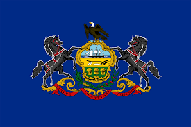

Benjamin W. Hoffman
About Me

My name is Benjamin Hoffman but everyone likes to call me Ben. I was born and raised in Pittsburgh Pennsylvania, and I currently reside there today! I am currently working as a junior software engineer at a large retail company writing programs for tech support teammates. I love to code, but front-end is a new journey for me. I struggle a lot with my CSS and understanding what looks good. I am excited to learn this term how to improve my skills as a front end developer.
Pittsburgh, Pennsylvania
Pennsylvania is where the Declaration of Independace was signed, and Pittsburgh was also once known as the steel capital of the world!